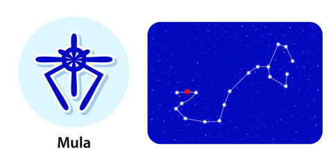

<
1st Pada: The first pada of the Moola Nakshatra falls in the Aries Navamsa ruled by Mars. This quarter is associated with all kinds of material and spiritual pursuits, depending on the evolutionary state of this native.
2nd Pada: The second pada of the Moola Nakshatra comes in the Taurus Navamsa ruled by Venus. The focus here is on the study of the occult sciences. On the material plane, the natives will be very hard-working and will achieve all their targets.
3rd Pada: The third pada of the Moola Nakshatra falls in the Gemini Navamsa ruled by Mercury. Here the natives believe in the jugglery of words, which helps them in great communication.
4th Pada: The fourth pada of the Moola Nakshatra falls in the Cancer Navamsa ruled by the Moon. The focus here is on the non-stop struggle to relate with people around them on the emotional plane.
“the root”ε, ζ, η, θ, ι, κ, λ, μ and ν Scorpionis
Lord: Ketu (south lunar node)
Symbol : Bunch of roots tied together, elephant goad
Deity : Nirrti, goddess of dissolution and destruction
Stone: Cat’s eye is your lucky stone.
Lucky numbers : 7 and 3
Lucky Day:Sunday, Tuesday and Wednesday
If a person born in this nakshatra give her or him a name with starting letter “Y” or “B”.
These persons should not live in East facing houses.
Persons born in Moola nakshatram will have good taarabalam with following nakshatrams:
Bharani, Rohini, Arudra, Pushyami, Aslesha, Pubba, Hasta, Swati, Anuradha, Jyesta, Purvashada, Sravanam, Satabisham, Uttarabhadra & Revati.
Indian zodiac: 0° – 13°20′ Dhanus
Western zodiac 26° Sagittarius – 9°20′ Capricorn
Mula Nakshatra
Characteristics male
The male native of the Moola Nakshatra has a very amiable nature and prefers to stay in a peaceful atmosphere. This native has his own set of values and lives strictly by them. It is observed that there is a fear about the male native of the Moola Nakshatra that he may sometimes be vulnerable, but he is strong from within and can tide over any obstacles by the sheer grit of his willpower, and achieve all his ambitious goals. He does not care about tomorrow and is happy to live in the present. He is god-fearing and knows that God will take care of him in any adverse situation, which makes him an optimistic person.Profession male
The male native of the Moola Nakshatra is kind of careless about his financial reserves, which frequently leads him into debt traps. He is good at advising others but is not capable of following it himself. This trait makes them suitable for the profession of financial advisers. As he is skilled in many fields, he is likely to make frequent job changes. Besides this, a carefree attitude also makes him always in need of money, and since he refuses to earn his money in any illegal way, his balance sheet seems always to be tilted towards the hint side. Therefore, he would do well to stay away from friends who are extravagant by nature, and in whose company he too may end up spending more than he can afford.Compatibility male
The male native of the Moola Nakshatra, save for a few cases, is unlikely to get any benefits from his parents and is a self-made man. He is likely to enjoy a fairly good conjugal life. His spouse will possess all the qualities of a good housewife.Health male
The male native of the Moola Nakshatra will be prone to get affected with tuberculosis, paralysis, or persistent stomach problems. As this native does not pay much heed to his health thus they face problems when they are the age of 27, 31, 44, 48, 56, and 60 years.Characteristics female
The female natives of the Moola Nakshatra are very pure-hearted. But, they become very stubborn sometimes about petty things, which not only shows her in poor light but also frequently invites unnecessary problems for her.Profession female
The female natives of the Moola Nakshatra are generally found to be uneducated, as they are simply not interested in studies. Many of these natives have ended up repeating a class because of the failure. And eventually, ending up dropping out of education. It is only when Jupiter is placed favourably in the Moola Nakshatra that this native makes rapid advances in education to reach the very top of her field.Compatibility female
The female natives of the Moola Nakshatra, it has been observed, are unable to enjoy married life. She is likely to be separated from her husband either by death or divorce. However, certain favourably placed planets can mitigate this effect. On the other hand, if the position of Mars does not favour her, she will have to deal with a myriad of problems, both from her husband as well as her children.Health female
The female natives of Mool Nakshatra will suffer from lumbago, paralytic attacks, stomach problems, pain in the hands, and shoulder. She will have to be particularly careful in the following years of her age: 27, 31, 38, 56, and 60.Mula Nakshatra Padas
1st Pada: The first pada of the Moola Nakshatra falls in the Aries Navamsa ruled by Mars. This quarter is associated with all kinds of material and spiritual pursuits, depending on the evolutionary state of this native.
2nd Pada: The second pada of the Moola Nakshatra comes in the Taurus Navamsa ruled by Venus. The focus here is on the study of the occult sciences. On the material plane, the natives will be very hard-working and will achieve all their targets.
3rd Pada: The third pada of the Moola Nakshatra falls in the Gemini Navamsa ruled by Mercury. Here the natives believe in the jugglery of words, which helps them in great communication.
4th Pada: The fourth pada of the Moola Nakshatra falls in the Cancer Navamsa ruled by the Moon. The focus here is on the non-stop struggle to relate with people around them on the emotional plane.